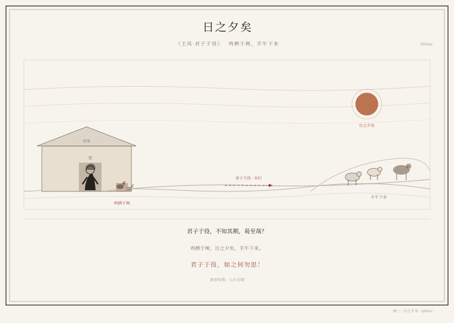
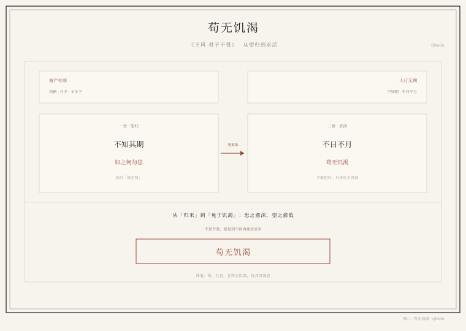

第六十六篇 君子于役
王风 · 之二 SJ066
朗读 · 普通话
依经文正文朗读，句读从文；不配乐、不改速、不加拖腔。全库同一音色（豆包 TTS），非播音员录制。
一 解题
诗三判：
- 谁在说：诗面是室家之思，妇人望其夫。毛序说是大夫思僚友、以风平王；朱子明说「君子，妇人目其夫之辞」。本库取诗面为妇人思夫，诗教背景为刺平王役使无度。
- 说什么事：丈夫在外行役，不知归期；鸡栖了，日落了，羊牛从牧地下来了，他还不回来。一章还问「曷至哉」，说「如之何勿思」；二章已不敢问归期，只求「苟无饥渴」。
- 为何编在此：王风第二首。前一篇《黍离》写宗周覆灭、故都成田；这一篇写平王役使无度、室家离散。一为国之亡，一为家之散；同为平王时诗。
《毛序》：「《君子于役》，刺平王也。君子行役无期度，大夫思其危难以风焉。」
郑笺：「曷，何也。君子往行役，我不知其反期，何时当来至哉！思之甚。」
朱子《诗集传》：「赋也。君子，妇人目其夫之辞。凿墙而栖曰埘。日夕则羊先归而牛次之。○大夫久役于外，其室家思而赋之曰：君子行役，不知其反还之期，且今亦何所至哉？鸡则栖于埘矣，日则夕矣，牛羊则下来矣。是则畜产出入尚有旦暮之节，而行役之君子乃无休息之时，使我如何而不思也哉？」
本库的看法：《君子于役》是一首「等归期」的诗。
从「不知其期」到「苟无饥渴」，从望他回来，到只求他别饿着、别渴着。不是战争诗，是行役诗；不是豪情，是家常。
全诗的机关在黄昏：鸡归了，日落了，羊牛下山了，一切都有归时，唯独人没有。
先辨三物：「君子」在这里是妇人称夫，不是泛称有德者；「于役」是行役，不必是打仗；「苟无饥渴」是「且得无饥渴」，是但愿他免于饥渴，不是命令他「不要饥渴」。
二 经文
第一章
君子于役，不知其期，曷至哉？鸡栖于埘，日之夕矣，羊牛下来。君子于役，如之何勿思！
第二章
君子于役，不日不月，曷其有佸？鸡栖于桀，日之夕矣，羊牛下括。君子于役，苟无饥渴！
分章：二章，章八句。
三 韵读
| 一 |
期/哉/埘/来/思 |
之（之、咍通押） |
| 二 |
月/佸/桀/括/渴 |
月（月、末、薛、曷通押） |
「役」不入韵，「矣」不入韵。一章五韵，二章五韵；一章以「期、埘、思」为之部，「哉、来」为咍，古韵同部；二章「月、佸、桀、括、渴」同为月部。韵脚一换，场景不换；场景不换，人仍不归。
四 字义与名物
字义
- 君子——妇人称其夫；不是泛称「有德者」。
- 于役——行役；在外服役、当差。不必是打仗。
- 期——归期；不是「时期」。
- 曷——何；何时。
- 至——归、来至；「曷至哉」是「何时回来」。
- 埘——凿墙为鸡窝；鸡栖于墙洞。
- 日之夕矣——太阳落了；黄昏。
- 羊牛下来——羊牛从牧地下来归圈。
- 如之何勿思——怎能不想；不是「不要想」。
- 不日不月——不能以日月计算；言行役之久，没有期限。
- 佸——会；相会。
- 桀——木杙；鸡栖的木桩。
- 括——至、来；羊牛下来聚集。
- 苟——且、但愿；不是「苟且」。
- 饥渴——饥饿、口渴；「苟无饥渴」是但愿他免于饥渴。
- 无期度——没有期限；「度」是限度。
- 危难——危险困苦。
- 风——婉讽、讽谏；不是「大风」。
- 平王——周平王；东迁洛邑。
- 王风——周东都王城畿内之诗；不能复雅，降而为风。
名物
- 埘——凿墙而成的鸡窝；鸡暮归之所。
- 桀——木杙；鸡栖的木桩。
- 羊牛——牧归的羊与牛；黄昏的归者。
- 黄昏——日夕；全诗的时间机关。
- 鸡——暮归；与行役者对照。
五 今译
第一章
丈夫在外行役，不知他的归期，何时才能回来啊？鸡已经栖在墙洞的鸡窝里，太阳落了，羊牛从牧地下来。丈夫在外行役，我怎能不想他！
第二章
丈夫在外行役，不能用日月计算，何时才能相会啊？鸡已经栖在木桩上，太阳落了，羊牛下来聚集。丈夫在外行役，但愿他不要挨饿受渴！
说明：「君子」今译作「丈夫」，取妇人称夫之义；「曷至哉」译作「何时才能回来」；「曷其有佸」译作「何时才能相会」；「苟无饥渴」译作「但愿他不要挨饿受渴」，不译作命令。
六 章旨
一章：不知期—黄昏—勿思。
丈夫行役，归期不明；鸡已上窝，日已西沉，羊牛已下山，他仍不归。畜产有旦暮之节，人却没有休息之时。末句「如之何勿思」，是反问，也是无可回避的思。
二章：不日不月—求无饥渴。
已经不能用日月计算，归期更远；鸡栖木桩，羊牛下括，黄昏再来一遍。末句降到「苟无饥渴」：不敢望他回来，只求他别饿着、别渴着。
两章合看：一章还望归，二章只求活。
思之愈深，望之愈低；望之愈低，思之愈重。「苟无饥渴」是全诗最轻的一句，也是最重的一句。
七 诗教
- 赋：朱子标「赋也」。直陈眼前：鸡栖、日夕、羊牛下来；不借比兴，只把黄昏摆出来。
- 观：观「畜产有期而人行无期」；观「望归→求无饥渴」的心理下沉；观「刺平王」的婉讽——不直斥，借室家之思以风。
- 群：可与所有等归期的人同群，与行役者的家人同群。诗不写宏大，只写一顿饭、一口水。
- 怨：怨在「无期度」，不在某一句斥骂。诗面是思，诗教是刺；怨得越婉，越见其深。
八 分寸与边界
- 不可把「君子」只当泛称「有德者」。这里是妇人称夫；毛序的「君子」是贤者、僚友，是诗教读法，不是诗面称呼。
- 不可把「于役」当「打仗」。行役是服役、当差；可以是戍役，不必是战阵。
- 不可把「期」当「时期」。这里是归期。
- 不可把「曷至哉」当「到哪里去」。它是「何时回来」。
- 不可把「埘」当「时」。埘是凿墙而成的鸡窝。
- 不可把「桀」当夏桀或「桀骜」。桀是木杙、鸡栖的木桩。
- 不可把「括」当「包括」。括是至、来。
- 不可把「苟」当「苟且」。苟是且、但愿。
- 不可把「如之何勿思」当「不要想」。它是「怎能不想」。
- 不可把「苟无饥渴」当命令「不要饥渴」。它是但愿他免于饥渴。
- 不可把「羊牛」写作「牛羊」。毛诗作「羊牛」；《诗本音》明说「今本或作牛羊，非」。
- 不可把「刺平王」读成直斥。诗面是室家之思，讽在言外。
九 存疑
- 诗旨：毛序「刺平王，大夫思其危难以风」；朱子「妇人目其夫之辞」，以为是室家思夫。本库取诗面为室家思夫，诗教背景为刺平王。
- 说话人：大夫思僚友，还是妇人思夫？毛、朱两读；本库不废毛序，但以朱子读诗面。
- 「君子」：妇人称夫，还是贤者？本库从朱子，诗面为夫。
- 「曷至哉」：何时归来，还是「到何处」？郑笺「何时当来至哉」，本库取归来。
- 「不日不月」：无期度，还是不计日月？两读相通；本库取「不能以日月计」。
- 「佸」：毛传「会也」，《韩诗》训「至也」；本库取「会」。
- 「桀」：毛传「鸡栖于杙为桀」；木杙，非夏桀。
- 「括」：毛传「至也」；或训「会」，本库取「至」。
- 「苟」：郑笺「且也」；或解「苟且」，本库取「且、但愿」。
- 「羊牛」与「牛羊」：毛诗、诗本音作「羊牛」；今本或有倒文，本库从毛诗。
- 「刺平王」：王风谱列《君子于役》为平王诗；诗是否实指平王役使，无确证，但背景可信。
十 跨典
- 《王风·黍离》：前一篇。黍离写国破，君子于役写家散；同为平王时，一为故都，一为黄昏。
- 《王风·扬之水》：平王戍申，周人怨思；同是行役无期，彼怨戍，此思归。
- 《豳风·东山》：「我徂东山，慆慆不归。」行役思归，同一母题；东山更细，君子于役更静。
- 《小雅·采薇》：「曰归曰归，岁亦莫止。」戍役思归；采薇有战事，君子于役只有黄昏。
- 《小雅·何草不黄》：「何草不黄，何日不行。」行役无期；彼直怨，此婉讽。
- 《左传》《国语》：平王东迁，王室微弱；王风诸篇多系平王时。
十一 双卡与图
双卡十对：
| 君子（妇人称夫） |
君子（泛称有德者，误） |
| 于役（行役） |
于役（打仗，误） |
| 期（归期） |
期（时期，误） |
| 曷至哉（何时归来） |
曷至哉（到哪里去，误） |
| 埘（凿墙鸡窝） |
埘（时，误） |
| 桀（木杙） |
桀（夏桀／桀骜，误） |
| 括（至、来） |
括（包括，误） |
| 苟（且、但愿） |
苟（苟且，误） |
| 如之何勿思（怎能不想） |
如之何勿思（不要想，误） |
| 刺平王（婉讽） |
刺平王（直骂，误） |

图一 · 日之夕矣，羊牛下来 黄昏望归图

图二 · 从望归到求活 义理图
读图三处：
- 黄昏：图一，鸡上窝、日西沉、羊牛下山；一切都有归时，只有人不归。
- 畜产有期：图一，鸡、日、羊牛三样都在动，都在归；人行却是空的。
- 苟无饥渴：图二，一章还望归，二章只求活；从「归来」降到「无饥渴」，是全诗最重的一降。